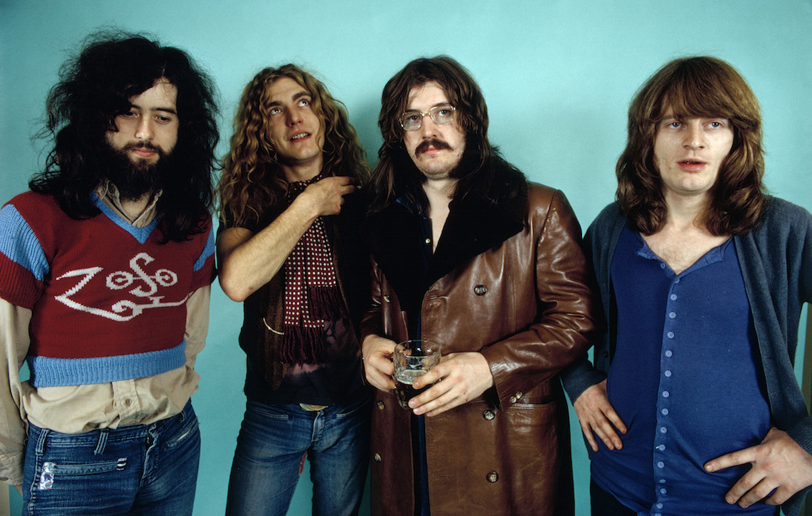

Bandas

Banda de Rock & Roll
Led Zeppelin
Led Zeppelin fue un grupo britanico de hard rock fundado en 1968 por el guitarrista Jimmy Page. La banda estuvo
integrada por Jhon Paul Jones como bajista y tecladista, el vocalista Robert Plant y Jhon Bonham a la bateria